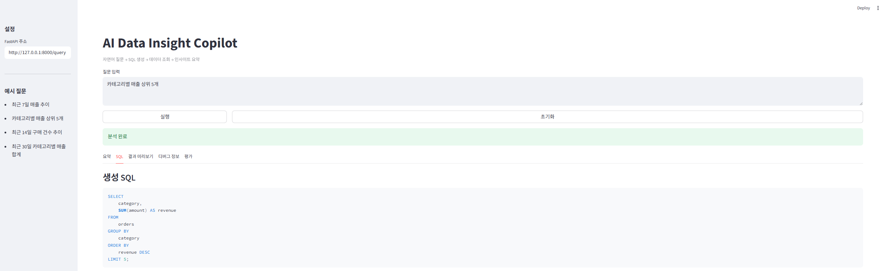
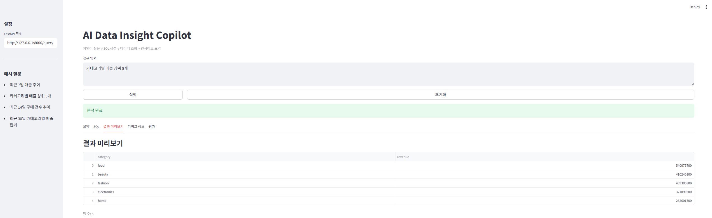
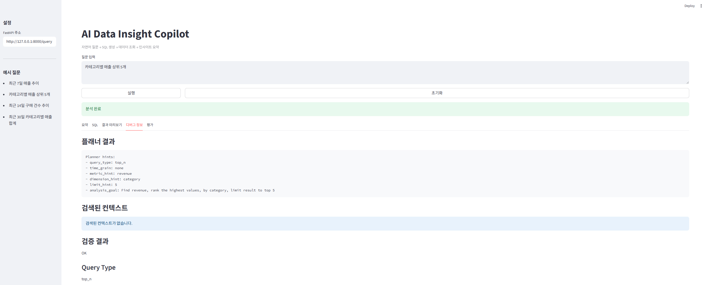
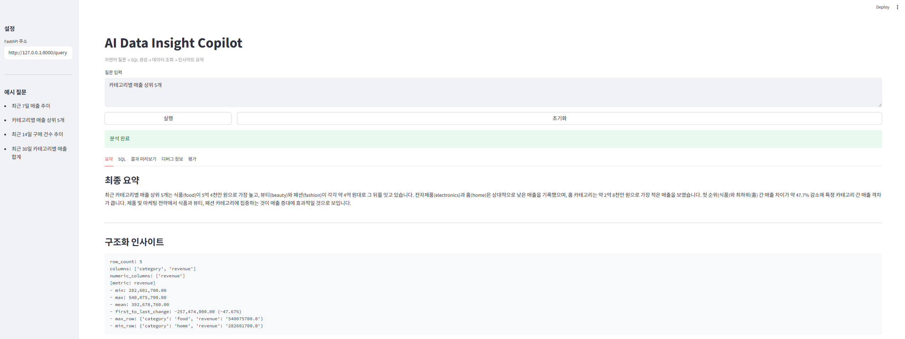
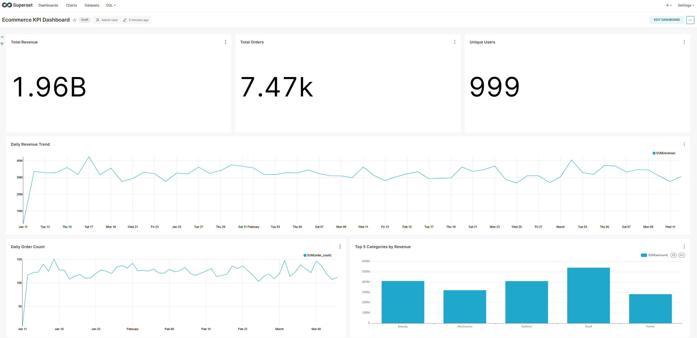

STEP 01 · SQL 생성
자연어 질문을 데이터마트 기준 SQL로 변환
사용자가 SQL을 직접 작성하지 않아도, 입력한 질문을 바탕으로 조회 목적에 맞는 SQL을 생성하고 확인할 수 있도록 구성했습니다.
SQL을 모르는 실무자도 자연어 질문으로 데이터를 조회하고 인사이트를 확인할 수 있도록 개인 프로젝트로 설계·구현한 LLM 기반 데이터 분석 Copilot 프로토타입입니다. 자연어 질문을 SQL 생성, 검증, 오류 재시도, 결과 요약 흐름으로 연결해 데이터 활용의 장벽을 낮추고, 신뢰 가능한 의사결정 흐름을 만드는 것을 목표로 했습니다.
데이터 조회와 리포트 작성 과정에서 반복적으로 발생하는 병목을 문제로 정의하고, 이를 자연어 기반 데이터 분석 Copilot 프로토타입으로 구현했습니다. 핵심 목표는 데이터 담당자의 지원이 필요했던 데이터 조회 과정을, 일반 실무자도 자연어로 접근할 수 있는 흐름으로 바꾸는 것이었습니다.
데이터 분석가나 개발자가 아닌 일반 실무자는 SQL이나 데이터베이스 구조를 알기 어렵고, 필요한 지표 조회에 데이터 담당자의 지원이 필요한 경우가 많습니다.
자연어 질문만으로 매출, 캠페인, 전환율, ROAS 같은 핵심 지표를 조회하고, 결과를 업무 관점에서 이해할 수 있는 데이터 분석 Copilot 흐름을 설계했습니다.
Pain Point: SQL이나 데이터 구조를 몰라 필요한 지표 조회에 데이터 담당자의 지원이 필요합니다.
기대효과: 자연어 질문만으로 매출, 전환율, ROAS 등 핵심 지표를 직접 조회하고 해석할 수 있습니다.
Pain Point: 반복적인 단순 조회 요청과 지표 확인 업무가 누적되어 분석 리소스가 분산됩니다.
기대효과: 검증 가능한 조회 흐름을 제공해 반복 요청을 줄이고, 더 복잡한 분석 업무에 집중할 수 있습니다.
Pain Point: 원천 데이터나 SQL 결과만으로는 빠르게 판단하기 어렵고, 별도 리포트 정리가 필요합니다.
기대효과: 조회 결과를 자연어 요약과 함께 확인해 데이터 기반 판단의 속도를 높일 수 있습니다.
※ 위 내용은 실제 사용자 조사 수치가 아닌, 프로젝트 기획 과정에서 정의한 사용자군별 문제와 기대효과입니다.
단순히 LLM을 호출하는 방식이 아니라, 질문이 데이터 조회와 검증된 결과 요약으로 이어지도록 서비스 흐름을 나누고, 안전한 활용을 위한 검증 기준과 통제 지점을 함께 설계했습니다.
사용자의 자연어 질문에서 기간, 지표, 조건을 분리하고, 이를 SQL 생성과 검증 단계로 연결했습니다. 단순히 LLM에 질문을 전달하는 방식이 아니라, 의도 분석 → SQL 생성 → 검증 → 오류 재시도 → 결과 요약으로 흐름을 나누어 실무 적용 시 필요한 흐름을 가정해 구조화했습니다.
LLM이 생성한 SQL은 잘못된 컬럼명이나 허용되지 않은 테이블을 참조할 수 있기 때문에, 검증 단계를 별도로 두었습니다. SELECT-only 제한, 허용 테이블 확인, 컬럼 존재 여부 확인 등 기본 검증 기준을 적용하고, 오류가 발생하면 원인을 반영해 재시도하는 흐름을 구성했습니다.
LLM이 원천 데이터를 바로 이해하기 어렵다는 점을 고려해, 분석에 필요한 지표를 중심으로 데이터마트를 구성했습니다. 캠페인별 비용, 클릭, 전환, 매출, ROAS 등 자주 조회되는 지표를 명확히 정의하고, 테이블과 컬럼의 의미를 메타데이터로 정리했습니다. 이를 통해 사용자의 질문을 실제 조회 가능한 쿼리로 바꿀 수 있도록 설계했습니다.
자연어 질문이 SQL 생성, 실행 결과, 검증 정보, 최종 요약으로 이어지도록 개인 프로젝트에서 구현한 프로토타입 흐름입니다. 마지막에는 정제된 데이터마트를 BI 대시보드로 연결한 확장 화면도 함께 구성했습니다.

사용자가 SQL을 직접 작성하지 않아도, 입력한 질문을 바탕으로 조회 목적에 맞는 SQL을 생성하고 확인할 수 있도록 구성했습니다.

쿼리 실행 결과를 테이블 형태로 제공해, 사용자가 조회 결과를 바로 확인하고 다음 해석 단계로 이어갈 수 있도록 했습니다.

AI 결과물을 그대로 사용하지 않고, 의도 분석·검증 결과·컨텍스트 정보를 확인할 수 있도록 구성해 통제 가능한 흐름을 만들었습니다.

단순 조회 결과를 넘어 최종 요약과 구조화된 인사이트를 제공해, 비개발자도 결과를 해석하고 의사결정에 활용할 수 있도록 했습니다.

정제된 데이터마트를 Superset 대시보드로 연결해 주요 KPI를 모니터링할 수 있는 확장 가능성을 함께 검토했습니다.
사용자가 데이터를 조회하고, 결과를 검증하고, 업무 판단에 활용하는 과정을 프로토타입 관점에서 정리했습니다.
SQL 작성 능력 또는 데이터 담당자의 지원이 필요합니다.
자연어 질문만으로 필요한 지표 조회를 시작할 수 있습니다.
비개발자도 직접 데이터 탐색을 시작할 수 있는 흐름을 만들었습니다.
조건이 바뀔 때마다 담당자에게 재요청이 발생합니다.
사용자가 질문을 수정하며 반복적으로 조회할 수 있습니다.
단순 반복 요청을 줄이고 데이터 담당자의 운영 부담을 낮출 수 있습니다.
쿼리와 결과의 타당성을 별도로 확인해야 합니다.
SELECT-only, 허용 테이블, 컬럼 존재 여부 등 검증 흐름을 둡니다.
AI 결과를 그대로 쓰지 않고, 통제 가능한 업무 흐름으로 관리합니다.
조회 결과를 다시 리포트나 요약 문서로 정리해야 합니다.
조회 결과를 자연어 요약과 구조화된 인사이트로 제공합니다.
단순 조회를 업무 판단에 활용 가능한 형태로 확장했습니다.
개별 요청 중심으로 처리되어 재사용 구조가 약합니다.
데이터마트, API, BI 대시보드로 확장 가능한 구조를 고려했습니다.
일회성 도구가 아니라 서비스화 가능한 구조로 발전시킬 수 있습니다.
이 프로젝트를 통해 문제 정의, 사용자 흐름 설계, 기술 구현 가능성 판단, 결과 검증 관점을 함께 경험했습니다.
이는 AX 운영/기획 직무에서 현업 요구와 개발 구현 사이를 연결하는 데 활용할 수 있습니다.
개인 프로젝트에서 설계한 AI 기반 조회·검증 흐름을 AX 운영/기획 업무의 주요 영역과 연결해 정리했습니다.
직무별 활용 사례, 프롬프트 예시, 검증 기준, 실패 사례를 콘텐츠화해 구성원이 AI를 더 쉽게 활용할 수 있는 구조를 만들 수 있습니다.
AI 결과를 그대로 쓰지 않고, 데이터 범위·허용 동작·검증 기준을 두는 방식으로 안전한 활용 체계를 설계할 수 있습니다.
고객과 실무자의 문제를 정의하고, AI가 제공할 수 있는 새로운 가치와 서비스 가능성을 프로토타입으로 빠르게 검증할 수 있습니다.